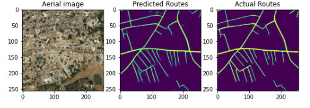
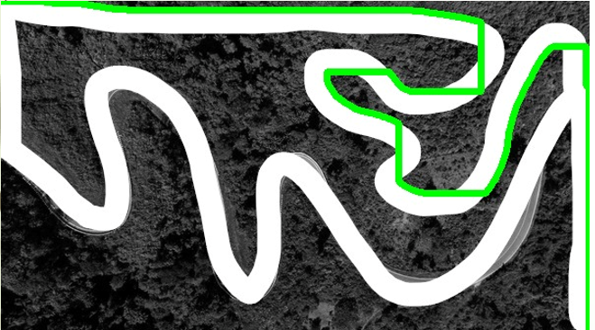
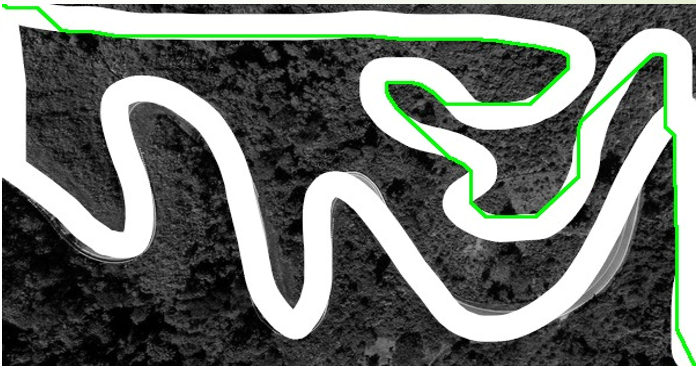
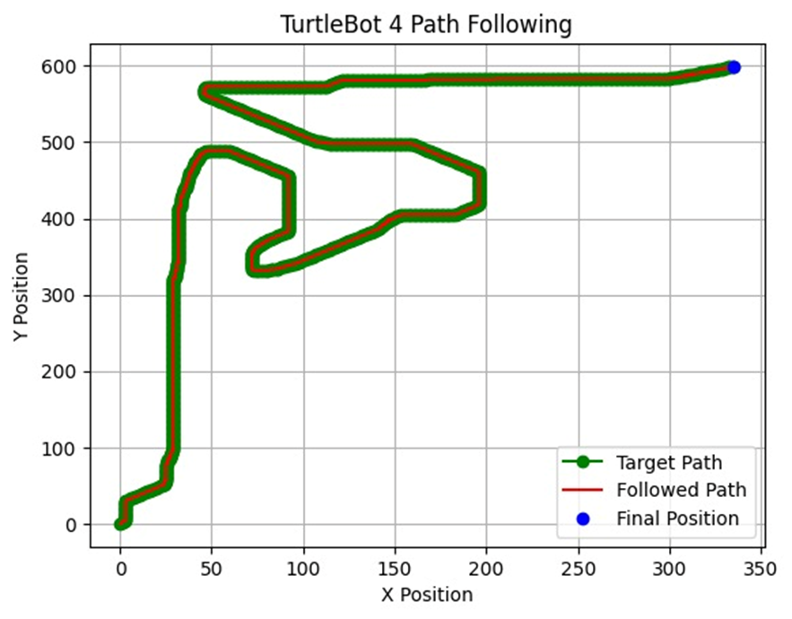
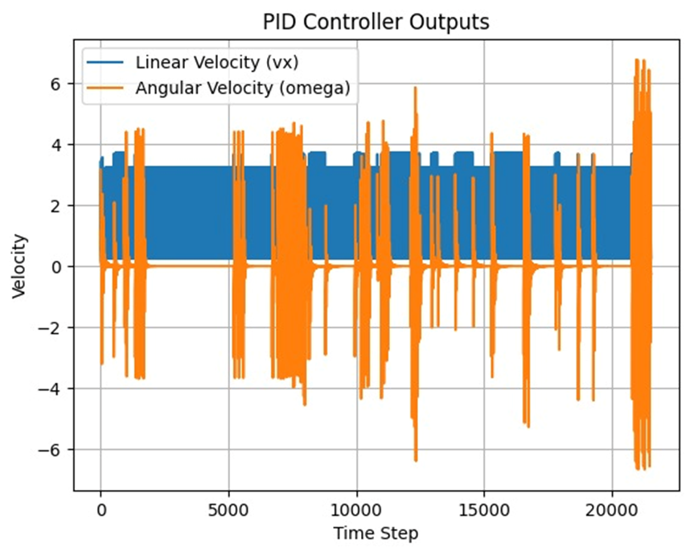

Problem & pipeline
Given an aerial image I, a start point S, and a goal point G in image coordinates, compute a route along the available paths and make a ground robot follow it. The project connects learned visual perception to discrete search and feedback control. [P:2–3,25]
- 01 / Perception
U-Net
Aerial image → predicted road mask
I → p(road | I) - 02 / Planning
A* search
Traversable grid + start / goal → path
(M, S, G) → P - 03 / Control
PID controllers
Waypoints + robot pose → motion commands
(P, pose) → (v, ω)
Geometric assumption
The presentation assumes that the aerial image is captured parallel to the ground, so pixel distances are proportional to ground distances. Route selection therefore begins in the image frame; coordinates must then be scaled and aligned to the robot’s operating frame. [P:2,28]
Road segmentation with U-Net
U-Net’s encoder gathers spatial context while its decoder restores a dense segmentation map. Skip connections pass encoder features to the corresponding decoder level, helping preserve local detail. This project applies the architecture to road extraction from aerial images. [U] [P:5,11–13]
Convolution block Two 3 × 3 convolutions, “same” padding, ReLU, and optional batch normalization.
Decoder 3 × 3 transposed convolution, skip concatenation, dropout, then a convolution block. A 1 × 1 convolution produces the final sigmoid output.
numFilters = 16 and dropout 0.1. Spatial sizes illustrate the 128 × 128 input used by the linked inference code. The presentation’s earlier 572-pixel diagram describes the original U-Net architecture. [P:9–12] [C]
Example 01 · Compare the aerial image, predicted routes, and reference routes in the original figure.
Making a mask usable for search
The linked integration code thresholds predictions at 0.5, applies a 3 × 3 dilation, runs its iterative erosion-based routine named skeletonize, then performs 5 × 5 morphological closing and Gaussian smoothing before a final binary threshold. White pixels become traversable grid cells. These operations bridge segmentation and planning. [C]
A* path planning on the road map
The road mask defines a graph: traversable pixels are nodes, and allowed moves connect neighbouring nodes. A* prioritizes a node using its accumulated path cost g plus a heuristic estimate h of the remaining distance. [P:15–18]
g(n): cost from the start · h(n): estimated cost to the goal
| Neighbourhood | Allowed moves | Step cost |
|---|---|---|
| 4 neighbours | Up, down, left, right | 1 |
| 8 neighbours | Cardinal and diagonal moves | 1 cardinal; √2 diagonal |
Example calculation
With four neighbours, moves stay on the grid axes. Eight neighbours also allow diagonals, each costing √2. Use the controls to compare paths on the same mask.
Heuristic in the slides and in the code
Slide 18 describes the octile heuristic, h = √2 · min(Δx, Δy) + |Δx − Δy|. The linked ROS implementation uses Euclidean distance, h = √(Δx² + Δy²), and eight-neighbour movement. Both are admissible for this unit grid with diagonal cost √2; the interactive example follows the code. Slide 17’s wording conflicts with the four-direction baseline on slide 15. The comparison here follows slides 15, 18, and 19. [P:15–19] [C]
Initial path

Original figure · slide 17
Modified path

Original figure · slide 19
PID path following
The robot follows a sequence of waypoints using separate linear and angular PID controllers. The presentation introduces heading and cross-track correction; the linked ROS node implements distance-to-waypoint and heading-error feedback. Odometry supplies the robot position and orientation, and the controller publishes linear.x and angular.z in a Twist command. [P:20–23] [C]
Next waypoint
(x*, y*)−Current pose
(x, y, θ)ed = √[(x* − x)² + (y* − y)²]
Linear PID → veθ = wrap[atan2(y* − y, x* − x) − θ]
Angular PID → ωIk = clip(Ik−1 + ekΔt, −10, 10)Dk = clip((ek − ek−1)/Δt, −10, 10)
| Controller | Kp | Ki | Kd | Command limit |
|---|---|---|---|---|
| Linear | 1.0 | 0.02 | 0.2 | 0 to 0.5 m/s |
| Angular | 2.0 | 0.15 | 0.2 | −1.9 to 1.9 rad/s |
Code settings: Δt = 0.1 s; advance to the next waypoint when distance error < 0.1 m; stop when the waypoint sequence is exhausted. These are implementation values, rather than results of a reported tuning study. [C]
Coordinate conversion and integration
The linked script rescales path coordinates to a configured room extent of 20 × 40 metres and retains every thirteenth path point. The presentation identifies coordinate scaling, model-loading compatibility, and tuning six gains across the two controllers as practical challenges. Frame alignment and waypoint spacing therefore matter alongside the planner itself. [C] [P:28]
Results & original evidence
The presentation documents segmentation outputs, a comparison of planned paths, controller outputs, and a target-versus-followed trajectory. It also includes a physical robot demonstration. Together, these provide qualitative evidence of the integrated perception, planning, and control workflow. [P:13,17–19,23,26]

View the reported controller-output plot

What the evidence establishes
The supplied presentation demonstrates the workflow through examples and recordings. It does not report a held-out segmentation score, planning-runtime benchmark, success rate, or RMS tracking error. The page therefore presents the original qualitative evidence without assigning unreported performance numbers.
Scope, challenges & next steps
Challenges reported by the team
- Differences between the U-Net training environment and the model-loading environment.
- Robot rotation during coordinate scaling in simulation.
- Tuning the six parameters of the linear and angular PID controllers.
Extensions proposed in the presentation
- More efficient path planning and dynamic replanning.
- Drone-assisted map updates coordinated with the ground robot.
- Camera and depth sensing, with Kalman filtering for sensor fusion.
Proposed future work. [P:29]
The image-derived grid represents road availability. The inspected planner checks destination-cell traversability for diagonal moves, with no explicit robot-footprint inflation or turning-radius constraint. Sensor fusion and live map updates remain proposed extensions. These limits matter when interpreting a visually plausible route as a physically executable one. [C] [P:29]
Sources & attribution
Project claims and original figures come from the team presentation. Implementation details are attributed to the linked code. Redrawn diagrams and the synthetic A* example explain those methods.
- PTeam 8. Path Optimization for Wheeled Robot in Unmapped Environments.
Aditya Mohan, Indra Kumar, Siddharth Jain, and Thandava S. CP 214, Indian Institute of Science. Supplied 31-slide final presentation. The public copy matches the attached file.
View project presentation ↗ Download PPTX ↓ - CProject implementation. ROS robot-control node and U-Net notebooks.
The repository named on slide 1. The inspected node defines mask processing, eight-neighbour A*, path scaling, and the PID controllers. Code citations refer to this pinned snapshot.
Read the ROS implementation ↗ - URonneberger, O., Fischer, P., & Brox, T. (2015).
U-Net: Convolutional Networks for Biomedical Image Segmentation. Architectural background for the encoder, decoder, and skip connections. The road-segmentation application and displayed outputs belong to this project.
Read the U-Net paper ↗ - RNormey-Rico, J. E., Alcalá, I., Gómez-Ortega, J., & Camacho, E. F. (2001).
Mobile robot path tracking using a robust PID controller. Control Engineering Practice, 9(11), 1209–1214. Background reference listed by the team on slide 30.
DOI ↗ - VAmidi, A., & Amidi, S. CS 230 convolutional neural networks cheatsheet.
Visual reference supplied for the page’s concise diagrams and paired technical explanations.
View the visual reference ↗